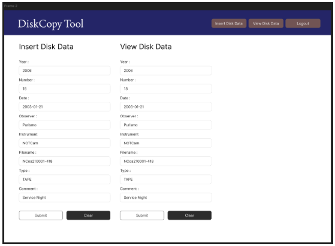
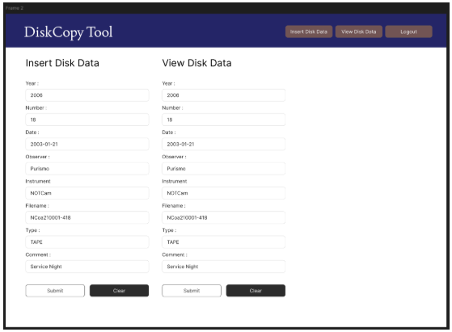
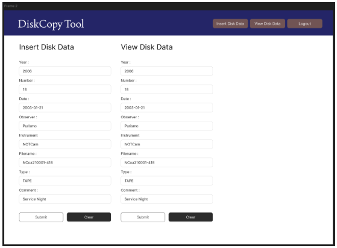

Nací en un pueblo de Granada que se hace llamar La
Cuna de Federico García Lorca: Fuente Vaqueros.
Allí empecé mis estudios en lenguaje musical y clarinete a los
10 años en el Centro Lorquino donde ensayaba la Banda Municipal la Vega de Granada
(compuesta por músicos de Atarfe, Fuente Vaqueros y Churriana de la Vega), hasta que me trasladé
a Granada capital para compaginar mis estudios de bachillerato con el conservatorio de música.
Tras acabar el Grado Profesional de Clarinete me trasladé a Madrid para acabar mis estudios
universitarios en Historia y Ciencias de la Música, allí fue dónde empezo mi interés por las Humanidades
Digitales gracias a la Universidad Autónoma de Madrid. Por último me propuse empezar el Grado
Superior en Desarrollo de Aplicaciones Web en La Palma, Islas Canarias.
Trayectoria
Formación Académica
Centro de Estudios
Titulación
Año
IES José María Pérez Pulido
Desarrollo de Aplicaciones Web
2024-2027
Escuela Oficial de Idiomas de Granada
Curso y certificación Inglés B1
2021-2022
Universidad Autónoma de Madrid
Historia y Ciencias de la Música y Tecnología Musical
2020-2021
Universidad de Granada
Historia y Ciencias de la Música
2017-2021
Conservatorio de Música "Ángel Barrios"
Grado Profesional en Clarinete
2014-2021
Escuela de Arte de Granada
Bachillerato Artes
2014-2016
Mi Proyecto Destacado: Prácticas en el Nordic Óptical Telescope
Foto Polaroid tomada el 8 de mayo de 2025 en el Observatorio de El Roque de Los Muchachos, La Palma.
Durante las prácticas de mi primer año en DAW, tuve la oportunidad de sumarme al equipo
de uno de los telescopios ubicados en La Palma. Se necesitaba hacer una copia de los datos
en formato físico (CD y DVD) para subirlo a la base de datos digital, donde ya se estaban guardando
los datos del telescopio de forma digital y automática desde 2013.
Archivo y almacén de discos con datos de las fotos del telescopio que se necesitan digitalizar.

Prototipo de aplicación que diseñé durante mis prácticas.


 
